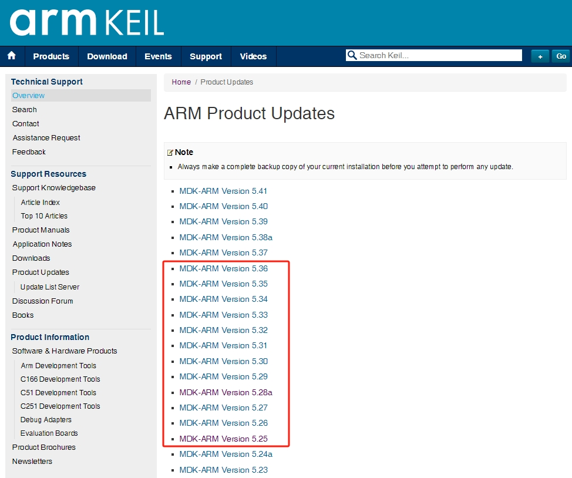
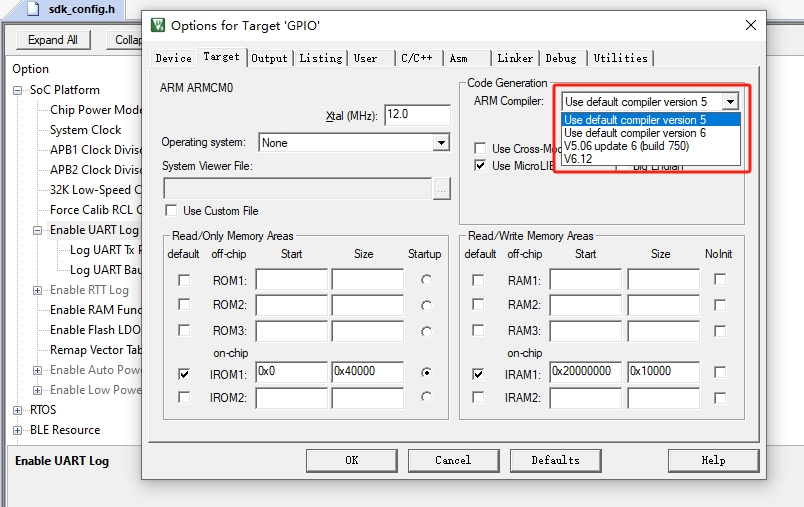
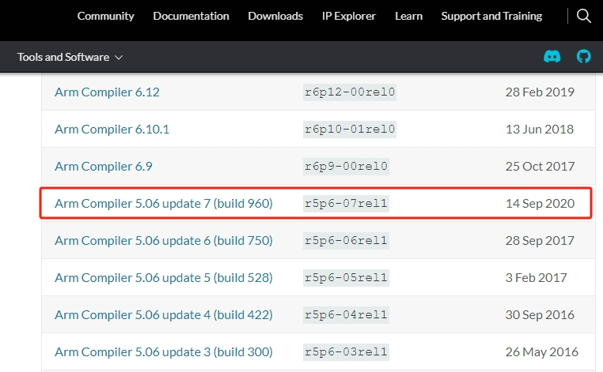
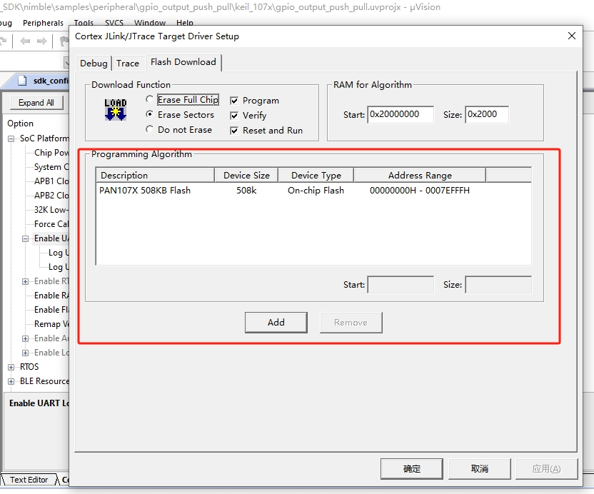

NDK 开发环境搭建¶
1. Keil MDK 集成开发环境（IDE）¶
PAN107x/PAN101x NDK 的 SDK 部分基于 Keil MDK v5 + ARMCC v5.06 版本构建，因此我们推荐您也使用相同的 IDE 版本及编译器版本，以确保能够正常开发。
您可以从 Keil 官方网站的历史版本页面中，下载指定版本的 Keil MDK 安装包: https://www.keil.com/update/rvmdk.asp

Keil MDK v5 历史版本下载页面¶
重要
我们推荐您使用 MDK v5.25 ~ v5.36 之间的版本, 这些版本在安装完成后，无需额外操作即可直接编译 NDK 中的所有例程。
若您的 PC 已经有 Keil MDK 开发环境，但版本低于 v5.25，则建议您更新 Keil 版本至我们上述的版本
若您的 PC 已经有 Keil MDK 开发环境，但版本高于 v5.36，那么：
请首先在 Keil 工程配置界面确认是否有 ARMCC v5.06 版本的编译器

Keil 编译器版本选择¶
若没有，则需要从 ARM 官方网站中找到单独的 ARMCC 编译器安装包进行安装: https://developer.arm.com/documentation/ka005198/latest/

ARMCC 编译器下载¶
2. Keil Flash 烧录算法 FLM 文件¶
为正常使用 Jlink 烧录程序，需要提前配置 Flash 烧录算法。请将 <PAN10XX-NDK>\03_MCU\mcu_misc 目录下的 FLM 文件，拷贝到 Keil MDK 安装目录下（如 C:\Keil_v5\ARM\Flash）。
在各个 Keil 工程的 Jlink 配置界面中，可以根据芯片类型选择对应的 FLM 文件：
烧录 PAN107x 芯片 Flash，请选择
PAN107x_508KB_FLASH.FLM烧录 PAN101x 芯片 Flash，请选择
PAN101x_252KB_FLASH.FLM

在 Keil 工程中选择正确的 JLink 烧录算法 FLM 文件¶
3. Python3 环境¶
NDK 各个例程均会在编译完成后调用 Post Build 脚本，实现一些特殊功能（如生成带有 Image Header 和签名的 Image 文件，供 OTA 升级使用）。为此，需要您的 PC 上有 Python3 环境。
我们推荐您安装 Python 3.8 或以上的版本，Python 安装方法请自行在互联网中查阅相关文档，安装成功后，请在命令提示符 CMD 中依次执行如下命令：
将 pip package 源重定向至国内的清华大学 pypi 镜像站，以提升 python package 的下载速度和成功率：
pip config set global.index-url https://pypi.tuna.tsinghua.edu.cn/simple
安装 NDK 中需要的第三方 Python 库：
pip install numpy intelhex pyyaml pycryptodome pywinusb